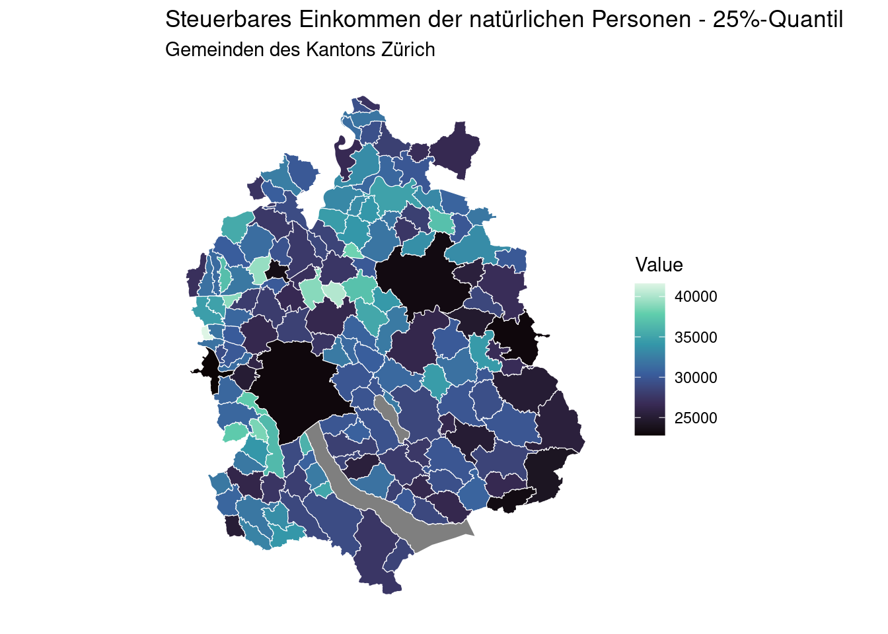
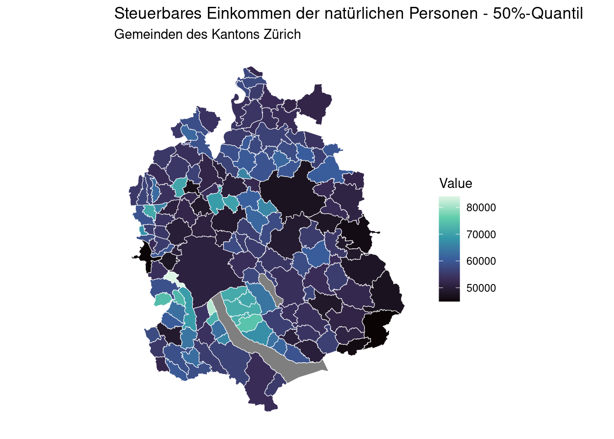

── Attaching core tidyverse packages ──────────────────────── tidyverse 2.0.0 ──
✔ dplyr 1.1.4 ✔ readr 2.1.5
✔ forcats 1.0.0 ✔ stringr 1.5.1
✔ ggplot2 3.5.1 ✔ tibble 3.2.1
✔ lubridate 1.9.3 ✔ tidyr 1.3.1
✔ purrr 1.0.2
── Conflicts ────────────────────────────────────────── tidyverse_conflicts() ──
✖ dplyr::filter() masks stats::filter()
✖ dplyr::lag() masks stats::lag()
ℹ Use the conflicted package (<http://conflicted.r-lib.org/>) to force all conflicts to become errors
library(sf)
Linking to GEOS 3.8.0, GDAL 3.0.4, PROJ 6.3.1; sf_use_s2() is TRUE
library(ggplot2)
Einleitung
Im Rahmen dieser Arbeit sollen die regionalen Unterschiede im Einkommens natürlicher Personen im Kanton Zürich betrachtet werden. wird das steuerbare Einkommen natürlicher Personen im Kanton Zürich betrachtet. Plotte 25 / 25 / 75 - Quantile des Steuerbaren Einkommens von natürlichen Personen auf Gemeindekarte der Zürcher Gemeinden.
Daten
Die verwendeten Daten umfassen zum einen das 25%-Quantil 1 / das 50%-Prozent 2 und das 75%-Quantil3 des steuerbaren Einkommens natürlicher Personen in den Gemeinden des Kantons Zürich. Diese Daten werden vom Kanton Zürich als OGD-Daten bereit gestellt. Um diese Einkommensinformationen kartographisch darzustellen wird darüber hinaus ein Shapefile, welches Gemeindegrenzen Zürcher Gemeinden verwendet. Stand 26.01.2024.
Analyseziele
Daten Aufbereitung
Einlesen der Daten
## Read in data data_q25 <-read_csv("/cloud/project/daten/raw/KANTON_ZUERICH_315.csv")
New names:
Rows: 4499 Columns: 12
── Column specification
──────────────────────────────────────────────────────── Delimiter: "," chr
(7): GEBIET_NAME, THEMA_NAME, SET_NAME, SUBSET_NAME, INDIKATOR_NAME, EIN... dbl
(4): BFS_NR, INDIKATOR_ID, INDIKATOR_JAHR, INDIKATOR_VALUE lgl (1): ...12
ℹ Use `spec()` to retrieve the full column specification for this data. ℹ
Specify the column types or set `show_col_types = FALSE` to quiet this message.
• `` -> `...12`
New names:
Rows: 4499 Columns: 12
── Column specification
──────────────────────────────────────────────────────── Delimiter: "," chr
(7): GEBIET_NAME, THEMA_NAME, SET_NAME, SUBSET_NAME, INDIKATOR_NAME, EIN... dbl
(4): BFS_NR, INDIKATOR_ID, INDIKATOR_JAHR, INDIKATOR_VALUE lgl (1): ...12
ℹ Use `spec()` to retrieve the full column specification for this data. ℹ
Specify the column types or set `show_col_types = FALSE` to quiet this message.
• `` -> `...12`
New names:
Rows: 4499 Columns: 12
── Column specification
──────────────────────────────────────────────────────── Delimiter: "," chr
(7): GEBIET_NAME, THEMA_NAME, SET_NAME, SUBSET_NAME, INDIKATOR_NAME, EIN... dbl
(4): BFS_NR, INDIKATOR_ID, INDIKATOR_JAHR, INDIKATOR_VALUE lgl (1): ...12
ℹ Use `spec()` to retrieve the full column specification for this data. ℹ
Specify the column types or set `show_col_types = FALSE` to quiet this message.
• `` -> `...12`
# Geodaten Gemeinden Kanton Zürich - Stand 26.01.2024municipality_prod_geo <-read_sf("/cloud/project/daten/raw/UP_GEMEINDEN_F.shp")
Aufbereitung der Daten für Analyse
# Check latest year for which information is available glimpse(data_q25)
## filter out latest year for all three data sets data_q25_2018 <- data_q25 |>filter(INDIKATOR_JAHR ==2018)data_q25_2018 <- data_q25_2018 |>filter(BFS_NR >0)data_q50_2018 <- data_q50 |>filter(INDIKATOR_JAHR ==2018)data_q50_2018 <- data_q50_2018 |>filter(BFS_NR >0)data_q75_2018 <- data_q75 |>filter(INDIKATOR_JAHR ==2018)data_q75_2018 <- data_q75_2018 |>filter(BFS_NR >0)# Change identifier to character for merge # Q25 data_q25_2018$BFS_N <-as.character(data_q25_2018$BFS_NR)municipality_prod_geo$BFS_N <-as.character(municipality_prod_geo$BFS)#Q50data_q50_2018$BFS_N <-as.character(data_q50_2018$BFS_NR)#Q75data_q75_2018$BFS_N <-as.character(data_q75_2018$BFS_NR)## join data sets with shapefile municipality_q25 <-left_join(municipality_prod_geo, data_q25_2018, by ="BFS_N")municipality_q50 <-left_join(municipality_prod_geo, data_q50_2018, by ="BFS_N")municipality_q75 <-left_join(municipality_prod_geo, data_q75_2018, by ="BFS_N")
Daten Visualisierung
## create maps # Create map with 25 Percent Quantil ggplot() +geom_sf(data = municipality_q25, aes(fill=INDIKATOR_VALUE), color ="#FFFFFF", size =0.2) +scale_fill_viridis_c(name ="Value", option ="mako") +labs(title ="Steuerbares Einkommen der natürlichen Personen - 25%-Quantil",subtitle ="Gemeinden des Kantons Zürich") +theme_minimal() +theme(axis.text =element_blank(),axis.ticks =element_blank(),panel.grid =element_blank(),legend.position ="right" )

# Create map with 50 Percent Quantil ggplot() +geom_sf(data = municipality_q50, aes(fill=INDIKATOR_VALUE), color ="#FFFFFF", size =0.2) +scale_fill_viridis_c(name ="Value", option ="mako") +labs(title ="Steuerbares Einkommen der natürlichen Personen - 50%-Quantil",subtitle ="Gemeinden des Kantons Zürich") +theme_minimal() +theme(axis.text =element_blank(),axis.ticks =element_blank(),panel.grid =element_blank(),legend.position ="right" )

# Create map with 75 Percent Quantil ggplot() +geom_sf(data = municipality_q75, aes(fill=INDIKATOR_VALUE), color ="#FFFFFF", size =0.2) +scale_fill_viridis_c(name ="Value", option ="mako") +labs(title ="Steuerbares Einkommen der natürlichen Personen - 75%-Quantil",subtitle ="Gemeinden des Kantons Zürich") +theme_minimal() +theme(axis.text =element_blank(),axis.ticks =element_blank(),panel.grid =element_blank(),legend.position ="right" )